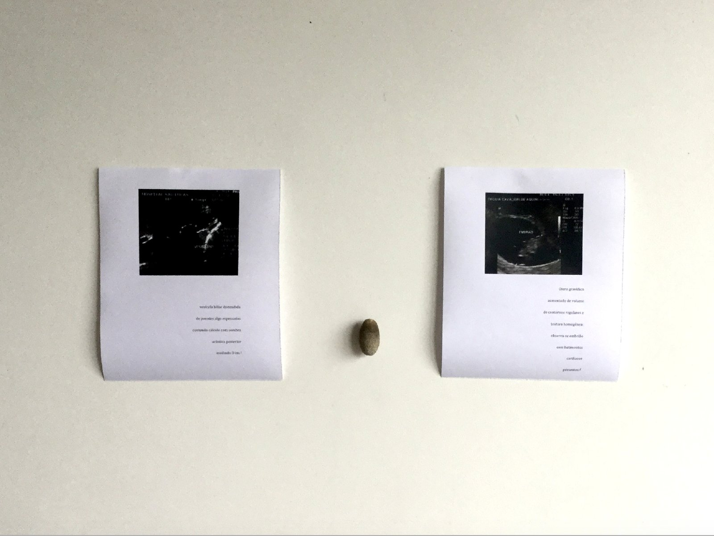
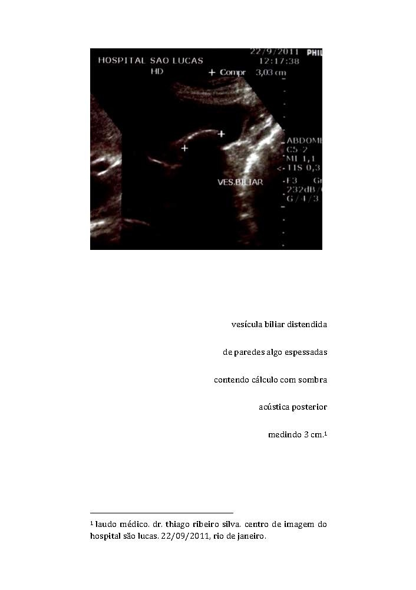
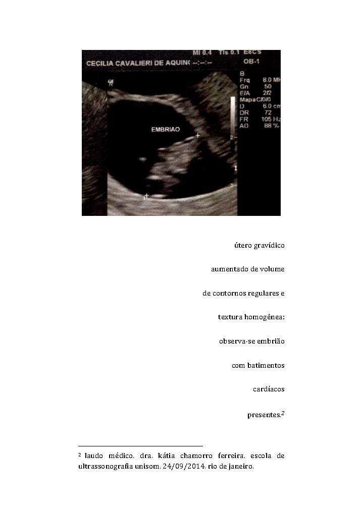

de dentro pra fora e pré-didática / poemas-laudo (from the inside out and pré-didática / poems-report)



2015
configuração tríptica de impressão a laser sobre papel sulfite e cálculo biliar
(triptych configuration of laser printing on paper and bond gallstones)